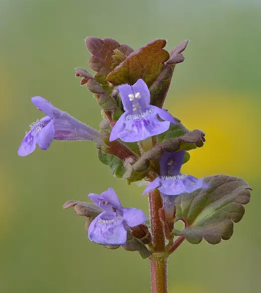

Ground ivy
Ground ivy is a wild green you can forage from May to July in Götaland (south) and Svealand (middle). Creeping plant with round, scalloped leaves and violet flowers; strong minty-sage smell.

When is ground ivy in season in Sweden?
Ground ivy is usually in season May to July. Timing shifts with weather, latitude and altitude.
Where does ground ivy grow in Sweden?
Ground ivy grows in Blekinge, Dalarna, Gotland, Halland, Jönköping, Kalmar, Kronoberg, Skåne, Stockholm, Södermanland, Uppsala, Värmland, Västmanland, Västra Götaland, Örebro, Östergötland. Regions: Götaland (south), Svealand (middle).
How do you recognise ground ivy?
Creeping plant with round, scalloped leaves and violet flowers; strong minty-sage smell.
How do you harvest ground ivy?
Pinch off young tips and top leaves before the plant flowers, when they are tender and mild. Leave the roots and lower leaves so it regrows. Pick away from roads, sprayed verges and dog-walking paths.
How do you eat ground ivy?
A herb for soups, eggs and tea; once used to flavour ale.
How do you store ground ivy?
Dry.